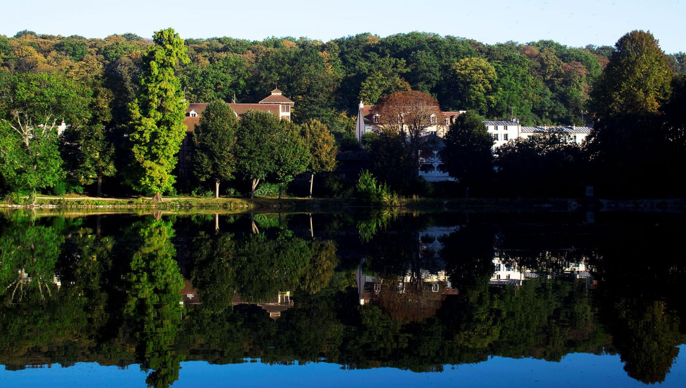
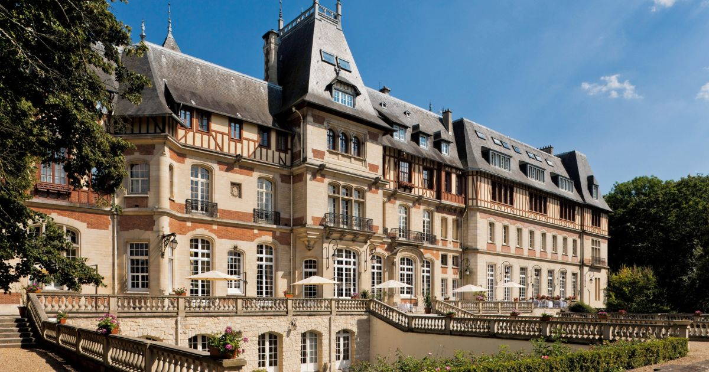
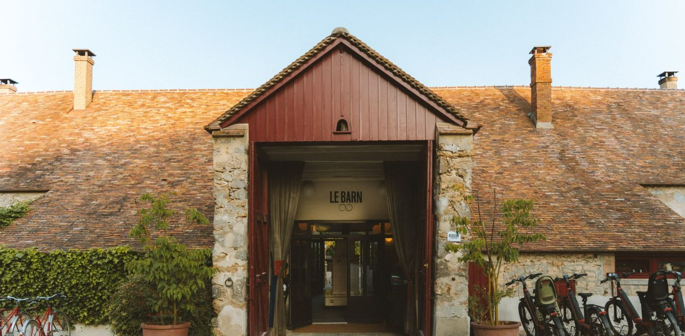
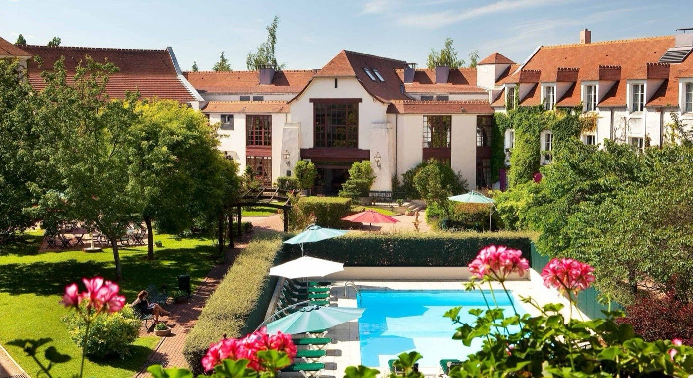

Hôtel spa privatif Île-de-France : 6 adresses testées à moins d'une heure de Paris
Vous cherchez un hôtel avec spa privatif près de Paris. Voici les 6 adresses qui existent
vraiment, cinq en Île-de-France et une aux portes de la région, côté Chantilly, testées
entre mars et juillet 2026, avec la distinction systématique entre spa permanent et
spa privatisable.
Par Swann Bertaud, rédacteur✺Publié le 21 juillet 2026✺13 min de lecture
Le Château de Villiers-le-Mahieu et ses douves, dans les Yvelines.
Photo : Henry Salomé / Wikimedia Commons, CC BY-SA 3.0.
TL;DR : Réponse immédiateLe meilleur spa privatif près de Paris
Château de Villiers-le-Mahieu, 17,2/20 : 45 min de Paris,
jacuzzi privatif permanent en suite, dès 320 €/nuit. La seule adresse d'Île-de-France
avec un spa privatif permanent.
Les Étangs de Corot, 16,8/20 : 25 min de Paris,
la plus proche de la capitale. Spa privatisable à 80 €/heure.
Château de Montvillargenne, 16,3/20 : la seule piscine
intérieure privatisable du classement, à 5 min de Chantilly.
La donnée qui compte : sur 6 adresses testées, 1 seule
propose un spa privatif permanent inclus dans le tarif nuit. 4 facturent la
privatisation en supplément (79 €/heure en moyenne) et 1 (Le Barn) ne propose
qu'un spa collectif. Aucun hôtel d'Île-de-France ne propose de bain nordique extérieur
privatif, la spécialité reste alsacienne.
Introduction : une offre bien plus mince qu'annoncé
Protocole LMHS appliqué (Luxe, Mise en scène, Hospitalité, Soin), score /20. Visites anonymes, aucun partenariat. La distinction entre spa privatif permanent (intégré à la suite, accessible 24 h/24) et spa privatisable (espace commun réservé à l'heure) a été vérifiée sur place, adresse par adresse. Elle change tout : au premier, on ne paie rien de plus ; au second, il faut ajouter 70 à 90 € par heure.
Périmètre retenu : moins d'une heure de Paris, plutôt que la stricte carte administrative. Cinq adresses sont franciliennes ; la sixième, le Château de Montvillargenne, se trouve à Gouvieux, dans l'Oise, aux portes de l'Île-de-France, côté Chantilly.
Le classement : 6 hôtels avec spa privatif en Île-de-France
Rang
Hôtel
Ville
Distance Paris
Score LMHS
Prix nuit
Type de spa
Équipements
01
Château de Villiers-le-Mahieu
Villiers-le-Mahieu (78)
45 min
17,2/20
320 €
Permanent (suite)
Jacuzzi, hammam, sauna
02
Les Étangs de Corot
Ville-d'Avray (92)
25 min
16,8/20
290 €
Privatisable
Jacuzzi, hammam
03
Château de Montvillargenne
Gouvieux (60)
50 min
16,3/20
270 €
Privatisable
Piscine intérieure, hammam, sauna
04
Le Barn
Bonnelles (78)
55 min
16,0/20
290 €
Collectif (non privatif)
Hammam, sauna, bains nordiques
05
Le Manoir de Gressy
Gressy (77)
35 min
15,7/20
240 €
Privatisable
Jacuzzi, hammam
06
Domaine de Maffliers
Maffliers (95)
40 min
15,1/20
210 €
Privatisable
Jacuzzi, sauna
Note : distance Paris = depuis la Gare de Lyon en voiture, hors embouteillages.
Prix nuit = chambre double en basse saison. Mis à jour juillet 2026.
Le Château de Montvillargenne, à Gouvieux, se situe dans l'Oise (Hauts-de-France) et non en
Île-de-France : il est retenu ici pour son accessibilité depuis Paris (50 min) et son statut de
référence sur le secteur de Chantilly.
Les 6 adresses : ce qu'on a vraiment trouvé
01
Château de Villiers-le-Mahieu 17,2/20
Un château entouré de douves, dans les Yvelines, à 45 minutes de Paris. Les suites supérieures disposent d'un jacuzzi privatif permanent et d'un accès au hammam et au sauna de l'hôtel, inclus dans le tarif nuit. On entre par un pont-levis, les chambres ont des plafonds à 4 mètres, et le parc de 6 hectares donne l'impression d'être à 300 km de Paris.
Ce qu'on a aimé : l'authenticité du lieu (pas une reconversion moderne, un vrai château), le jacuzzi privatif accessible 24 h/24, le calme absolu.
Ce qui déçoit : les suites avec spa privatif sont rares (4 sur 56 chambres), réservation indispensable 3 semaines à l'avance. Le restaurant est correct sans être exceptionnel.
Pour qui : le dépaysement château + spa privatif permanent sans quitter la région · Yvelines · Dès 320 €/nuit, spa privatif inclus
02

Les Étangs de Corot 16,8/20
Installés à Ville-d'Avray, dans la maison où Camille Corot venait peindre ses célèbres étangs. À 25 minutes de Paris, c'est l'hôtel spa le plus proche de la capitale dans ce classement. Le spa privatisable (jacuzzi, hammam) se réserve à l'heure.
Ce qu'on a aimé : la proximité de Paris (25 min, c'est imbattable), le cadre impressionniste et les étangs classés, le restaurant gastronomique de qualité.
Ce qui déçoit : le spa est privatisable, pas permanent, 80 €/heure en supplément. Et les chambres sont correctes sans être exceptionnelles pour 290 €/nuit. Le cadre extérieur est meilleur que l'intérieur.
Pour qui : s'échapper une nuit sans faire 2 h de route · Hauts-de-Seine · Dès 290 €/nuit, spa privatisable à 80 €/heure
03

Château de Montvillargenne 16,3/20
Un château Belle Époque de 1902, à Gouvieux, à 5 minutes de Chantilly et 50 minutes de Paris. Le spa privatisable comprend une piscine intérieure de 15 mètres, un hammam et un sauna.
Ce qu'on a aimé : la piscine intérieure, la seule du classement, le cadre Belle Époque soigné, la proximité du château et des hippodromes de Chantilly.
Ce qui déçoit : le spa privatisable est populaire, les créneaux du week-end partent vite. L'hôtel accueille beaucoup de séminaires d'entreprise, ce qui peut nuire à l'ambiance romantique en semaine.
Pour qui : Chantilly, le patrimoine Belle Époque et une piscine privatisable · Oise · Dès 270 €/nuit, spa privatisable à 90 €/heure
04

Le Barn 16,0/20
Le Barn mérite une mise au point : il figure dans beaucoup de listes « hôtel spa privatif Île-de-France », mais son spa (hammam, sauna, bains nordiques) est collectif, ouvert de 9 h à 20 h et accessible à tous les clients. Aucune privatisation possible. S'il se classe si haut, c'est pour la qualité de l'établissement lui-même, pas pour une intimité qu'il ne propose pas. On l'inclut ici par honnêteté, pour corriger une information fausse qui circule.
Ce qu'on a aimé : le cadre nature exceptionnel (moulin du XVIIIe siècle, 200 hectares en lisière de la forêt de Rambouillet), le mobilier soigné, la proximité de Paris (55 min).
Ce qui déçoit : le spa n'est pas privatif, contrairement à ce qu'affirment de nombreux sites. Et le restaurant déçoit pour le prix (50 €/personne).
Pour qui : la nature près de Paris, sans exiger un spa privatif · Yvelines · Dès 290 €/nuit, spa collectif inclus
05

Le Manoir de Gressy 15,7/20
Un manoir du XVIIe siècle reconverti en hôtel 4 étoiles, à Gressy en Seine-et-Marne, à 35 minutes de Paris et tout près de Roissy. L'architecture est normande, colombages, briques rouges, jardin à la française. Le spa privatisable (jacuzzi, hammam) se réserve pour 1 heure.
Ce qu'on a aimé : le charme du manoir en pleine Seine-et-Marne, le jardin intérieur, la proximité de Roissy (pratique avant ou après un vol long-courrier).
Ce qui déçoit : l'emplacement près de Roissy est aussi son défaut, on entend parfois les avions. Le spa est petit et les équipements basiques pour le prix.
Pour qui : les voyageurs en transit et les Parisiens du nord-est · Seine-et-Marne · Dès 240 €/nuit, spa privatisable à 75 €/heure
06
Domaine de Maffliers 15,1/20
Un château du XIXe siècle entouré de forêt, à Maffliers dans le Val-d'Oise, à 40 minutes de Paris. Le spa privatisable comprend un jacuzzi et un sauna.
Ce qu'on a aimé : la forêt environnante (sensation d'isolement rare à cette distance de Paris), le prix accessible, l'ambiance calme.
Ce qui déçoit : le décor intérieur est daté et manque de personnalité. C'est le spa le moins bien équipé du classement, jacuzzi et sauna basiques, pas de hammam.
Pour qui : un château avec spa à moins de 250 €/nuit · Val-d'Oise · Dès 210 €/nuit, spa privatisable à 70 €/heure
Ce que ce classement révèle sur l'offre francilienne
Critère
Île-de-France
Alsace
Alpes & Jura
Hôtels à spa privatif permanent
1
2
1
Prix moyen nuit, spa permanent
320 €
385 €
580 €
Bain nordique extérieur privatif
0
2
0
Distance moyenne depuis Paris
42 min
3 h
5 h 30
Score LMHS moyen
16,2/20
17,4/20
18,1/20
Colonnes Alsace et Alpes & Jura calculées sur les établissements de notre
classement national (La Cheneaudière et 48° Nord pour
l'Alsace, Jiva Hill Resort pour les Alpes & Jura), il s'agit de l'échantillon testé, pas d'un
recensement exhaustif de l'offre régionale.
La phrase à retenir : « L'Île-de-France ne compte qu'un seul hôtel avec spa privatif permanent à moins d'une heure de Paris : le Château de Villiers-le-Mahieu. Aucun ne propose de bain nordique extérieur privatif, une lacune que l'Alsace comble dès 350 €/nuit. »
Par profil : quelle adresse choisir ?
Pour le spa privatif permanent (inclus 24 h/24)
Château de Villiers-le-Mahieu, et lui seul (17,2/20, 320 €, 45 min). L'unique option de la région pour un vrai spa permanent. Réserver 3 semaines à l'avance.
Pour la proximité maximale (moins de 30 minutes)
Les Étangs de Corot (25 min, 290 € + 80 €/h de spa). La meilleure option si vous ne voulez pas conduire plus d'une demi-heure.
Pour le meilleur rapport qualité/prix
Domaine de Maffliers (210 €/nuit + 70 €/h de spa). Le moins cher du classement, dans un château forestier.
Pour une piscine privatisable
Château de Montvillargenne, et lui seul (270 € + 90 €/h, bassin de 15 m). La seule piscine intérieure privatisable du classement.
Pour le palmarès complet des meilleurs hôtels & spas de France, voir notre palmarès national.
FAQ : hôtel spa privatif en Île-de-France
Quel est le meilleur hôtel avec spa privatif en Île-de-France ?
Le Château de Villiers-le-Mahieu (17,2/20 LMHS) : seul hôtel de la région avec un spa privatif permanent inclus dans le tarif nuit, à 45 minutes de Paris. À partir de 320 €/nuit.
Y a-t-il un hôtel avec spa privatif à moins de 30 minutes de Paris ?
Oui : Les Étangs de Corot à Ville-d'Avray (25 min). Spa privatisable à 80 €/heure en supplément. C'est la seule adresse du classement à moins de 30 minutes.
Quelle est la différence entre spa privatif et spa privatisable ?
Spa privatif permanent : intégré à la suite, accessible 24 h/24, inclus dans le tarif. Spa privatisable : espace commun réservable pour 1 à 2 heures, facturé en supplément (70 à 90 €/heure en Île-de-France, 79 € en moyenne). Dans la région, seul Villiers-le-Mahieu propose un spa permanent.
Le Barn a-t-il un spa privatif ?
Non. Le Barn propose un spa collectif (hammam, sauna, bains nordiques) ouvert à tous les clients de 9 h à 20 h. Aucune privatisation possible. De nombreux sites l'indiquent à tort dans les listes « spa privatif Île-de-France ».
Quel budget prévoir pour un week-end hôtel spa privatif en Île-de-France ?
Pour 2 nuits à deux : 640 € à Villiers-le-Mahieu (spa permanent inclus) contre 740 € aux Étangs de Corot (2 nuits + 2 h de spa). Budget total dîners compris : 900 à 1 200 €.
Méthode et sources
6 établissements visités entre mars et juillet 2026. Visites anonymes. Aucun partenariat. Distinction spa permanent / privatisable / collectif vérifiée sur place. Score LMHS sur 4 critères (Luxe, Mise en scène, Hospitalité, Soin). Distances mesurées depuis la Gare de Lyon via Google Maps, hors embouteillages. Photographies : Wikimedia Commons et sites officiels des établissements cités.
6 établissements visités1 seul privatif permanentVisites anonymes0 partenariat
Swann Bertaud
Rédacteur, Meilleurs.
Publié le 21 juillet 2026
Dernière mise à jour : 17 août 2026